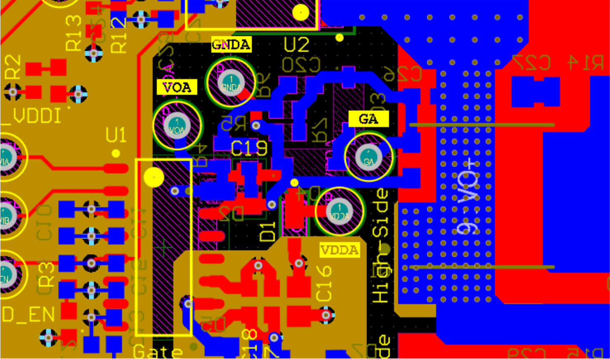

Power Electronics Research Intern

Power Electronics Research Intern
05/2024 to 08/2024 @U of T Lab for Advanced Power Conversion and Systems Analysis
700V Buck Converter
Using LTspice, Altium Designer, and PLECS, I designed a half-bridge converter employing new high-voltage GaN devices. To minimize switching losses and the risk of gate mistriggering/overdriving, I focused on optimizing the design and layout of the level-shifted bootstrap gate driver circuit.
View Project